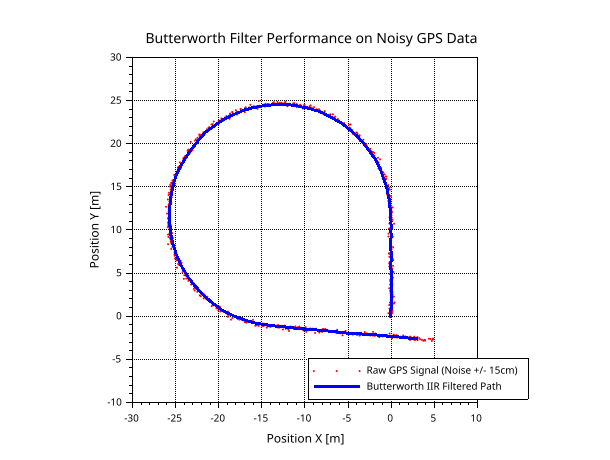

2. Path Tracking and Error Computation
Before any control law can be applied, the raw reference trajectory must be processed to provide the robot with clean, actionable geometric data. Agricultural paths, often recorded via RTK GPS, contain noise and discrete jumps that can induce high-frequency oscillations in the steering actuators.
Below is the architecture of this part:
flowchart LR
InState1([State Vector]):::signal
FCP[Find Closest Point]
subgraph Pos_Block [Desired Pos]
FCPD[Find Current Pos Desired]
FFPD[Find Future Pos Desired]
end
subgraph Compute_Block [Compute Block]
Ind([Index]):::signal
InState2([State Vector]):::signal
CC1[Calculate Curvature]
TE[Tracking Errors]
CC2[Calculate Curvature]
end
subgraph Results_Block [Results]
C[C]:::signal
L_Err([L_Err]):::signal
H_Err([H_Err]):::signal
C_H_Pred([C_H_Pred]):::signal
end
%% --------------------------- Global Connections ---------------------------
InState1 --> FCP
FCP --> |Index| FCPD & FFPD
%% Connections to calculations
FCPD -->|Current Pos Desired| CC1 & TE
Ind --> CC1
InState2 --> TE
FFPD -->|Future Pos Desired<br>Future Index| CC2
%% Connections to results (Mermaid stacks results automatically)
CC1 --> C
TE --> L_Err & H_Err
CC2 --> C_H_Pred
%% --------------------------- ANCHORING ---------------------------
%% These two lines prevent orphan variables from drifting left.
%% They force 'Index' and 'State Vector' to render AFTER block 1.
FCPD ~~~ Ind
FFPD ~~~ InState2
%% --------------------------- STYLES ---------------------------
style FCP stroke:#8b5cf6,stroke-width:2px,fill:transparent
style Pos_Block stroke:#8b5cf6,stroke-width:2px,fill:transparent
style Compute_Block stroke:#8b5cf6,stroke-width:2px,fill:transparent
style Results_Block stroke:#8b5cf6,stroke-width:2px,fill:transparent
classDef signal stroke:#f59e0b,stroke-width:2px,stroke-dasharray: 5 5,fill:transparent;2.1. Trajectory Filtering
Raw discrete points are insufficient for smooth control derivatives (especially when curvature feedforward is required). To filter the sensor noise without introducing arbitrary phase shifts that would delay the robot's reaction time, a 1st-order Infinite Impulse Response (IIR) low-pass Butterworth filter is applied to the spatial coordinates.

The Butterworth filter is chosen for its maximally flat frequency response in the passband, ensuring no artificial ripples are added to the trajectory shape. The filter is applied independently to the \(X\) and \(Y\) data sequences:
This results in the Smoothed_Traj variable used throughout the simulator.
Path_Filter.sce
function Smoothed_Traj = Path_Filter(Traj)
X0 = Traj(1,2);
Y0 = Traj(1,3);
Butterworth_Filter = iir(1, 'lp', 'butt', 0.0125, [0, 0]);
X = Traj(:,2) - X0;
Y = Traj(:,3) - Y0;
Smoothed_Traj = zeros(size(Traj,1), size(Traj,2));
Smoothed_Traj(:,1) = Traj(:,1);
Smoothed_Traj(:,2) = flts(X', Butterworth_Filter)' + X0;
Smoothed_Traj(:,3) = flts(Y', Butterworth_Filter)' + Y0;
endfunction
2.2. Closest Point Index
To evaluate the tracking errors, the simulator must constantly find the closest trajectory point to the robot's current position \((X_{Robot}, Y_{Robot})\). The standard Euclidean distance between the robot and a trajectory point \((X_{Traj}, Y_{Traj})\) is:
Computing the square root for thousands of trajectory points at every simulation step is computationally expensive. Mathematically, since the square root function \(f(x) = \sqrt{x}\) is strictly monotonically increasing for all \(x \ge 0\), minimizing the distance \(d\) is strictly equivalent to minimizing the squared distance \(d^2\). Thus, the algorithm evaluates:
The index of the minimum value defines the closest discrete point on the path.
Closest_Point.sce
function Closest_Point_Index = Find_Closest_Point_Index(Current_Position)
global Smoothed_Traj ;
X_Robot = Current_Position(1) ;
Y_Robot = Current_Position(2) ;
X_Traj = Smoothed_Traj(:, 2) ;
Y_Traj = Smoothed_Traj(:, 3) ;
Distances_Sq = (X_Traj - X_Robot).^2 + (Y_Traj - Y_Robot).^2 ;
[Min_Val, Closest_Point_Index] = min(Distances_Sq) ;
endfunction
2.3. Anticipation Logic
Due to actuator dynamics (delays in the hydraulic steering) and system inertia, a vehicle reacting only to its immediate lateral error will suffer from severe oscillations and instability. To achieve smooth tracking, the robot must anticipate upcoming curves by aiming for a future reference point on the path.
In the simulator, this anticipation logic is encapsulated within the Future_Pos_Desired function. The algorithm employs a "Path Walking" strategy to find exactly where the robot should look, based on a predefined Lookahead_Distance (\(L_d\)).
Starting from the robot's current closest point on the trajectory (index \(i\)), a virtual cursor walks forward point-by-point. At each step \(k\), the Euclidean distance \(d_k\) to the next discrete trajectory point is calculated:
These small segment lengths are continuously accumulated into a total traveled distance \(S\):
The while loop in the algorithm increments the index \(k\) and accumulates \(S\) until the accumulated distance reaches or exceeds the lookahead parameter:
Once this condition is met (or if the end of the trajectory array is reached to prevent out-of-bounds errors), the loop terminates. The final index \(j\) is extracted as Index_Future, and its corresponding coordinates \((X_{\text{Desired}\_\text{Future}}, Y_{\text{Desired}\_\text{Future}})\) become the Desired_Pos_Future. This future point is critical for the feedforward curvature calculations used in the advanced control laws.
Find_Future_Pos_Desired.sce
function [Index_Future,Desired_Pos_Future] = Future_Pos_Desired(...
Lookahead_Distance,...
Closest_Point_Index)
global Smoothed_Traj ;
NbPoints = size(Smoothed_Traj, 1) ;
if Closest_Point_Index < 1 then
Closest_Point_Index = 1 ;
elseif Closest_Point_Index > NbPoints - 1 then
Closest_Point_Index = NbPoints - 1 ;
end
Accumulated_Dist = 0 ;
Current_Idx = Closest_Point_Index ;
while (Accumulated_Dist < Lookahead_Distance) & (Current_Idx < NbPoints - 1)
P_Current = [Smoothed_Traj(Current_Idx, 2) ; Smoothed_Traj(Current_Idx, 3)] ;
P_Next = [Smoothed_Traj(Current_Idx + 1, 2) ; Smoothed_Traj(Current_Idx + 1, 3)] ;
Step_Dist = Compute_Distance(P_Current, P_Next) ;
Accumulated_Dist = Accumulated_Dist + Step_Dist ;
Current_Idx = Current_Idx + 1 ;
end
Index_Future = Current_Idx ;
X_Desired_Future = Smoothed_Traj(Index_Future, 2) ;
Y_Desired_Future = Smoothed_Traj(Index_Future, 3) ;
Desired_Pos_Future = [X_Desired_Future ; Y_Desired_Future] ;
endfunction
Compute_Distance.sce
2.4. Trajectory Projection Methods
Finding the closest discrete point is not precise enough, as the robot is often located between two defined points. Two projection methods are implemented to find the exact, continuous orthogonal projection point \((X_{proj}, Y_{proj})\) and its tangent heading \(\theta_{proj}\).
2.4.1. Polynomial Fitting
This method creates a local, smooth mathematical curve using 3 neighboring points: \(P_{i-1}\), \(P_i\) (closest point based on discrete track points), and \(P_{i+1}\). We assign an arbitrary local parametric time \(t \in [-1, 0, 1]\) to these points. We model the local \(X\) and \(Y\) coordinates as second-order polynomials:
To find the coefficients for \(X\), we evaluate the polynomial at the 3 local times, yielding a system of 3 linear equations:
This is rewritten in matrix form using a Vandermonde matrix:
The Vandermonde matrix naturally arises from polynomial modeling. Because it is built on distinct parametric time steps, its determinant is guaranteed to be non-zero, ensuring a unique and stable mathematical solution for our local curve.
By inverting the Vandermonde matrix, we obtain the coefficients \(A_x, B_x,\) and \(C_x\). The exact same procedure is applied to find the coefficients \(A_y, B_y,\) and \(C_y\) for the \(Y\) coordinates.
a) Finding the Exact Orthogonal Projection
The point \(P_i\) (\(t=0\)) is only the discrete closest point. To find the true, continuous projection of the robot onto the trajectory, we must find the parameter \(t_{best}\) that minimizes the squared Euclidean distance between the robot's current position \((X_{robot}, Y_{robot})\) and the polynomial curve \((X(t), Y(t))\).
The squared distance function is:
Instead of solving the complex derivative analytically, the algorithm generates a fine virtual curve by discretizing \(t\) in the interval \([-1, 1]\) with a high-resolution step (e.g., \(\Delta t = 0.02\)). It evaluates \(D^2(t)\) for all these generated points and extracts the \(t_{best}\) that corresponds to the minimum distance.
The exact projected coordinates are therefore:
b) Heading Calculation
Once \(t_{best}\) is determined, the local orientation of the trajectory (the projected heading \(\theta_{proj}\)) is derived from the curve's tangent vector \(T\) evaluated precisely at \(t_{best}\).
The time-derivative of the position vector is:
Evaluating this tangent vector at our optimal projection parameter:
Finally, the projected heading \(\theta_{proj}\) is calculated using the four-quadrant arctangent. According to our simulator's specific coordinate frame (where \(\theta = 0\) is aligned with the negative Y-axis, pointing downwards, and increases counter-clockwise), the relationship maps the \(X\) and \(Y\) velocity components as follows:
Find_Future_Pos_Desired.sce
function Desired_Pos_Now = Current_Pos_Desired(...
Current_Position, ...
Closest_Point_Index, ...
Projection_Method)
global Smoothed_Traj ;
X_Robot = Current_Position(1) ;
Y_Robot = Current_Position(2) ;
NbPoints = size(Smoothed_Traj, 1) ;
Cl_Pt_Index = Closest_Point_Index ;
if Cl_Pt_Index < 2 then
Cl_Pt_Index = 2 ;
elseif Cl_Pt_Index > NbPoints - 1 then
Cl_Pt_Index = NbPoints - 1 ;
end
X_Traj = Smoothed_Traj((Cl_Pt_Index-1):(Cl_Pt_Index+1), 2) ;
Y_Traj = Smoothed_Traj((Cl_Pt_Index-1):(Cl_Pt_Index+1), 3) ;
t = [-1 ; 0 ; 1] ;
Vandermonde = [t.^2, t, ones(3, 1)] ;
Coeffs_X = Vandermonde \ X_Traj ; // Coeffs_X = [Ax, Bx, Cx]
Coeffs_Y = Vandermonde \ Y_Traj ; // Coeffs_Y = [Ay, By, Cy]
t_calc = -1 : 0.02 : 1 ;
X_calc = Coeffs_X(1)*t_calc.^2 + Coeffs_X(2)*t_calc + Coeffs_X(3) ;
Y_calc = Coeffs_Y(1)*t_calc.^2 + Coeffs_Y(2)*t_calc + Coeffs_Y(3) ;
Distances = (X_calc - X_Robot).^2 + (Y_calc - Y_Robot).^2 ;
[Min_Dist, Best_Idx] = min(Distances) ;
t_best = t_calc(Best_Idx) ;
X_Proj = X_calc(Best_Idx) ;
Y_Proj = Y_calc(Best_Idx) ;
dX_dt = 2 * Coeffs_X(1) * t_best + Coeffs_X(2) ;
dY_dt = 2 * Coeffs_Y(1) * t_best + Coeffs_Y(2) ;
Theta_Proj = atan(dX_dt, -dY_dt) ;
Desired_Pos_Now = [X_Proj ; Y_Proj ; Theta_Proj] ;
endfunction
2.4.2. Vector Geometric Projection
A faster, purely geometric approach. Let \(A\) and \(B\) be the two trajectory points framing the robot \(R\). We define the vectors \(\vec{AB} = B - A\) and \(\vec{AR} = R - A\).
The exact orthogonal projection relies on the scalar product (dot product). The scalar projection ratio \(\sigma\) along the segment \(AB\) is calculated by projecting \(\vec{AR}\) onto \(\vec{AB}\):
To prevent the projection from falling outside the segment (e.g., in sharp corners), \(\sigma\) is saturated:
The exact projected coordinates and heading are:
(Note: Angle mapping matches the Scilab vertical origin frame).
Find_Future_Pos_Desired.sce
function Desired_Pos_Now = Current_Pos_Desired(...
Current_Position, ...
Closest_Point_Index, ...
Projection_Method)
global Smoothed_Traj ;
X_Robot = Current_Position(1) ;
Y_Robot = Current_Position(2) ;
NbPoints = size(Smoothed_Traj, 1) ;
Cl_Pt_Index = Closest_Point_Index ;
if Cl_Pt_Index < 2 then
Cl_Pt_Index = 2 ;
elseif Cl_Pt_Index > NbPoints - 1 then
Cl_Pt_Index = NbPoints - 1 ;
end
P_Prev = [Smoothed_Traj(Cl_Pt_Index - 1, 2) ; Smoothed_Traj(Cl_Pt_Index - 1, 3)] ; // X-1 and Y-1
P_Curr = [Smoothed_Traj(Cl_Pt_Index, 2) ; Smoothed_Traj(Cl_Pt_Index, 3)] ; // X and Y
P_Next = [Smoothed_Traj(Cl_Pt_Index + 1, 2) ; Smoothed_Traj(Cl_Pt_Index + 1, 3)] ; // X+1 and Y+1
P_Rob = [X_Robot ; Y_Robot] ;
Dist_Prev = norm(P_Rob - P_Prev) ;
Dist_Next = norm(P_Rob - P_Next) ;
if Dist_Next < Dist_Prev then
A = P_Curr ;
B = P_Next ;
else
A = P_Prev ;
B = P_Curr ;
end
AB = B - A ;
AR = P_Rob - A ;
Scalar_Projection = (AR(1)*AB(1) + AR(2)*AB(2)) / (AB(1)^2 + AB(2)^2) ; // Scalar_Projection is sigma in the Theory.md
Scalar_Projection = min( 1, Scalar_Projection ) ;
Scalar_Projection = max( 0, Scalar_Projection ) ;
Point_Proj = A + Scalar_Projection * AB ;
X_Proj = Point_Proj(1) ;
Y_Proj = Point_Proj(2) ;
Theta_Proj = atan(AB(1), -AB(2)) ;
Desired_Pos_Now = [X_Proj ; Y_Proj ; Theta_Proj] ;
endfunction
2.5. Curvature Calculation
To calculate the local curvature of the track, the algorithm approximates the trajectory as a circle passing through three points in the vicinity of the robot.
Instead of taking three strictly consecutive points (which could be too close to each other and lead to numerical instability or division by zero due to discretization noise), the algorithm introduces a Spacing parameter (e.g., 3 points apart). We define three local points \(P_1(x_1, y_1)\), \(P_2(x_2, y_2)\), and \(P_3(x_3, y_3)\).
A sliding window logic is implemented to ensure these points are always safely extracted, even at the very beginning or the very end of the trajectory:
- Start of track: Anchored at indices \(1\), \(1+S\), \(1+2S\).
- End of track: Anchored at the last possible indices.
- Normal usage: Centered around the current closest point \(i\): \(P_{i-S}\), \(P_i\), and \(P_{i+S}\).
a) Circumcenter Computation
Three non-collinear points uniquely define a circle. The center \((X_c, Y_c)\) of this circumscribed circle is found by determining the intersection of the perpendicular bisectors of the segments \(P_1P_2\) and \(P_2P_3\).
By solving the geometric system, the coordinates of the circumcenter are given by the following equations:
Note: In the code, a tiny constant (1e-9) is added to the denominator to act as a safeguard against pure division by zero when points are perfectly aligned.
b) Signed Radius and Curvature
If the three extracted points are perfectly aligned, the denominator approaches zero, sending the circumcenter to infinity (\(X_c = \infty\) or \(Y_c = \infty\)). In this case, the track is a straight line, and the curvature \(C\) is strictly \(0\).
Otherwise, we compute the signed radius of curvature. The sign is crucial for control purposes (e.g., determining whether the curve turns left or right). This is achieved by projecting the vector from the robot's projected position \((X_{proj}, Y_{proj})\) to the circumcenter \((X_c, Y_c)\) onto the directional vector defined by the projected heading \(\theta_{proj}\):
Finally, the curvature \(C\) is simply the inverse of this signed radius:
Curvature.sce
function Curvature = Calculate_Curvature(...
Point_Index, ...
Pos_Desired)
global Smoothed_Traj ;
NbPoints = size(Smoothed_Traj, 1) ;
Spacing = 3 ;
// Begin of the track
if Point_Index <= Spacing then
p1 = 1 ;
p2 = 1 + Spacing ;
p3 = 1 + 2 * Spacing ;
// End of the track
elseif Point_Index >= (NbPoints - Spacing) then
p1 = NbPoints - 2 * Spacing ;
p2 = NbPoints - Spacing ;
p3 = NbPoints ;
// Normal use
else
p1 = Point_Index - Spacing ;
p2 = Point_Index ;
p3 = Point_Index + Spacing ;
end
x1 = Smoothed_Traj(p1, 2) ; y1 = Smoothed_Traj(p1, 3) ;
x2 = Smoothed_Traj(p2, 2) ; y2 = Smoothed_Traj(p2, 3) ;
x3 = Smoothed_Traj(p3, 2) ; y3 = Smoothed_Traj(p3, 3) ;
Num_X = ((x1^2 + y1^2 - x2^2 - y2^2)*(y1 - y3) - (x1^2 + y1^2 - x3^2 - y3^2)*(y1 - y2)) ;
Den_X = (2 * ((x1 - x2)*(y1 - y3) - (x1 - x3)*(y1 - y2))) + 1e-9;
X_Center = Num_X / Den_X ;
Num_Y = ((x1^2 + y1^2 - x2^2 - y2^2)*(x1 - x3) - (x1^2 + y1^2 - x3^2 - y3^2)*(x1 - x2)) ;
Den_Y = (2 * ((y1 - y2)*(x1 - x3) - (y1 - y3)*(x1 - x2))) + 1e-9;
Y_Center = Num_Y / Den_Y ;
if abs(X_Center) == %inf | abs(Y_Center) == %inf | isnan(X_Center) then
Curvature = 0 ;
else
X_Proj = Pos_Desired(1) ;
Y_Proj = Pos_Desired(2) ;
Theta_Proj = Pos_Desired(3) ;
Radius_Curvature = (X_Center - X_Proj) * cos(Theta_Proj) + (Y_Center - Y_Proj) * sin(Theta_Proj) ;
if Radius_Curvature == 0 then
Curvature = 0 ;
else
Curvature = 1 / Radius_Curvature ;
end
end
endfunction
2.6. Computation of Tracking Errors
Once the continuous projection point \((X_{proj}, Y_{proj})\) and the reference heading \(\theta_{proj}\) are determined (see Section 2.4), the simulator must compute the relative tracking errors. This process, implemented in the Computation_Tracking_Errors function, represents a coordinate transformation from the Global Cartesian Frame to the Local Frenet Frame.
2.6.1. The Distance Vector
We define the distance vector \(\vec{D}\) as the translation required to move from the projected point on the path to the robot's current position:
This vector contains the raw spatial gap, but it is not yet actionable for control because it is still expressed in global \(X\) and \(Y\) coordinates.
2.6.2. Derivation of the Lateral Error (\(y\))
The lateral error \(y\) is defined as the orthogonal distance from the robot to the path. Mathematically, this is the scalar projection of the distance vector \(\vec{D}\) onto the path's unit normal vector \(\vec{n}_{proj}\).
a) Defining the Reference Vectors
Based on the simulator's specific orientation convention (where \(\theta=0\) is aligned with the negative Y-axis and increases counter-clockwise), the unit tangent vector \(\vec{t}_{proj}\) at the path is:
The unit normal vector \(\vec{n}_{proj}\) must be perpendicular to the tangent (\(\vec{t}_{proj} \cdot \vec{n}_{proj} = 0\)). In this frame, the normal vector is:
b) The Projection Operation
The lateral error \(y\) is the dot product of the distance vector and the normal vector:
Expanding the dot product yields the fundamental equation used in the Scilab code:
2.6.3. Derivation of the Heading Error (\(\tilde{\theta}\))
The heading error represents the angular misalignment between the vehicle's chassis and the trajectory's local direction. It is defined simply as the difference between the two absolute angles:
2.6.4. Angular Fitting and Normalization
Because angles are periodic, a simple subtraction can lead to values outside the practical range \([-\pi, \pi]\). For example, if \(\theta_{robot} = 170^\circ\) and \(\theta_{proj} = -170^\circ\), the raw subtraction yields \(340^\circ\), whereas the physical geometric error is only \(-20^\circ\).
To ensure the controller always reacts to the "shortest" angular path, a wrapping logic is applied:
- If \(\tilde{\theta} > \pi\): \(\tilde{\theta}_{new} = \tilde{\theta} - 2\pi\)
- If \(\tilde{\theta} < -\pi\): \(\tilde{\theta}_{new} = \tilde{\theta} + 2\pi\)
2.6.5. Summary of the Error Vector
The final output is the tracking error vector, which serves as the entry point for all high-level control laws:
Tracking_Errors.sce
function Tracking_Errors = Calculate_Tracking_Errors(...
Current_Position, ...
Current_Pos_Desired)
X_Robot = Current_Position(1) ;
Y_Robot = Current_Position(2) ;
Theta_Robot = Current_Position(3) ;
X_Proj = Current_Pos_Desired(1) ;
Y_Proj = Current_Pos_Desired(2) ;
Theta_Proj = Current_Pos_Desired(3) ;
Lat_Err = (X_Robot - X_Proj) * cos(Theta_Proj) + (Y_Robot - Y_Proj) * sin(Theta_Proj) ;
H_Err = Theta_Robot - Theta_Proj ;
if H_Err > %pi then
H_Err = H_Err - 2 * %pi ;
elseif H_Err < -%pi then
H_Err = H_Err + 2 * %pi ;
end
Tracking_Errors = [Lat_Err ; H_Err] ;
endfunction
2.7. Tracking Point Offset
In standard mobile robotics, the control point is usually the center of the rear axle. However, in agriculture, the priority is the precision of the implement (e.g., a seeder, a plow, or a sprayer). Depending on whether the tool is mounted on the 3-point hitch or towed, the point that must strictly follow the trajectory is often located several meters behind or in front of the vehicle's reference center.
The simulator handles this via a coordinate transformation defined by two offsets:
- \(T_x\): Longitudinal offset (distance along the vehicle's main axis).
- \(T_y\): Lateral offset (side distance from the center-line).
2.7.1. Mathematical Transformation
Let \(R(X, Y)\) be the coordinates of the rear axle center and \(\theta\) be the vehicle's heading. We seek the coordinates of the Tracked Point \(P_t (X_t, Y_t)\).
Based on the vehicle's local frame, the transformation uses the following trigonometric rotation (matching the simulator's vertical origin convention):
2.7.2. Physical Impact on Control
When an offset is applied, the "Tracking Errors" (\(y\) and \(\tilde{\theta}\)) calculated in Section 2.6 are no longer computed for the robot's center, but for the position of the tool.
- Positive \(T_x\) (Front sensor/tool): Increases the system's anticipation. The robot reacts to the path "ahead" of its physical center, which generally stabilizes the tracking but can lead to "cutting corners".
- Negative \(T_x\) (Towed implement): Adds a significant phase lag and a "trailer effect". Controlling a point behind the axle is inherently more difficult and often requires the use of the dynamic rear-steering laws detailed in Chapter 7 to maintain the tool on the line during curves.
By adjusting \(T_x\) and \(T_y\), the simulator can represent any configuration, from a simple autonomous tractor to a complex machine with an asymmetric side-mounted tool.